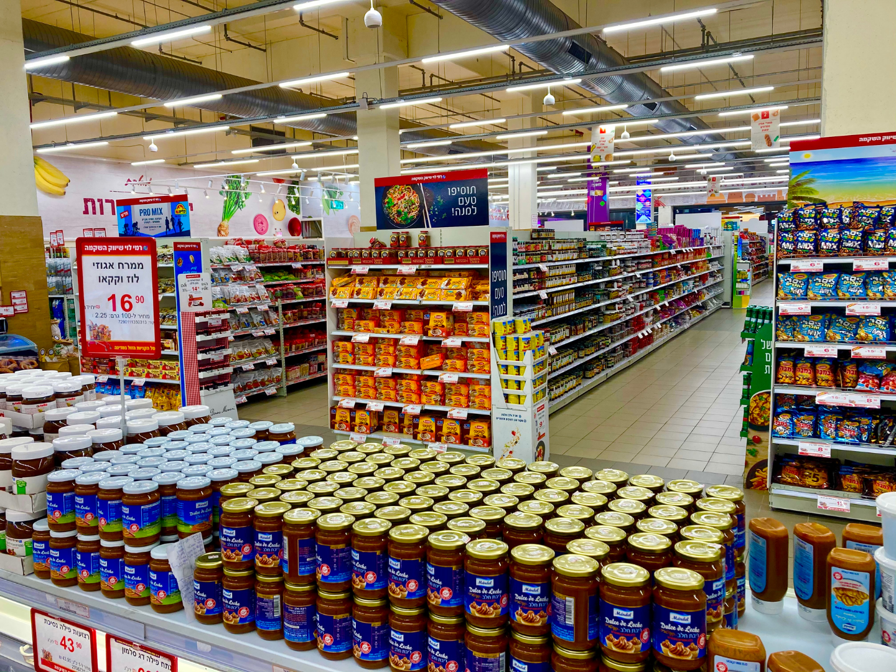

1. Fluxo de aproximação
Cada vez que um cliente se aproxima de uma gôndola, ele deixa um
sinal — mesmo sem tocar em nada.
O InfoConnect capta esse movimento por meio de sensores simples, sem
câmeras e sem reconhecimento de imagem, transformando o que antes
era invisível em um dado real sobre o que desperta o interesse do
consumidor dentro da loja.

2. Tempo de atenção
Não basta saber que o cliente parou — é preciso entender por quanto tempo ele ficou ali, avaliando, comparando, decidindo. Esse tempo de permanência revela o que realmente prende a atenção na prateleira, uma informação que os dados de venda tradicionais nunca conseguem mostrar sozinhos.
3. Integração física
Cada gesto do cliente diante da gôndola indica intenção de compra. Sensores conectados a um Arduino detectam a aproximação e a permanência em frente a cada produto, e enviam os registros para a API, que os guarda no banco de dados. Com esse histórico, o supermercado descobre quais produtos atraem mais atenção, em quais horários o fluxo é maior e como a disposição das mercadorias influencia a compra.